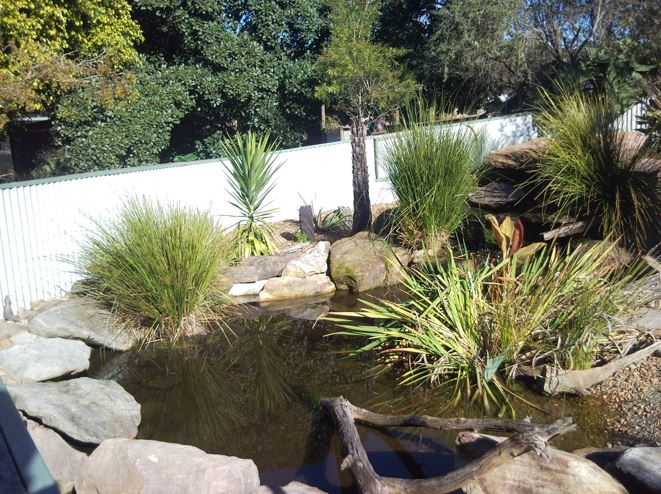
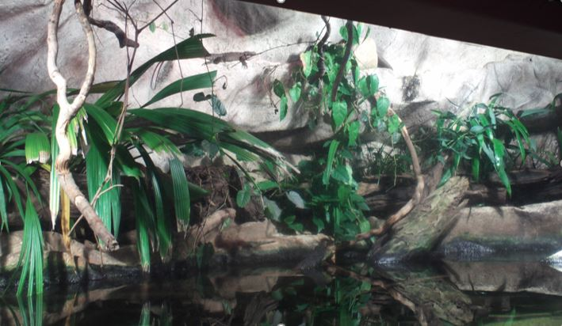
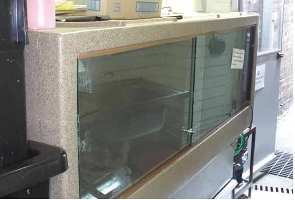
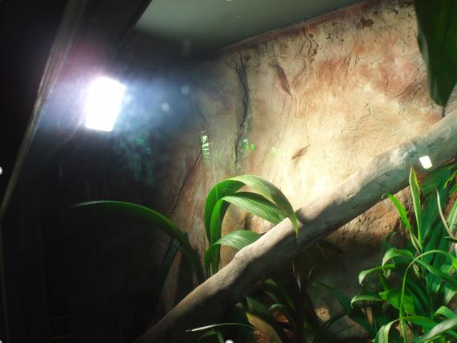
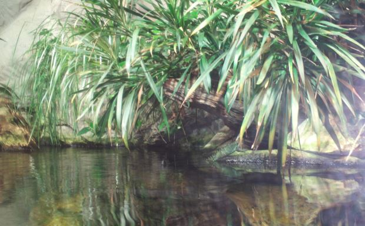

In the wild, Water Dragons can be seen sitting in trees, swimming in water bodies, foraging on the ground and basking on rocks. (Greer 1990. Anonymous 1976) Long-term enclosures need to provide opportunities for these natural behaviours. Since an enclosure should be fitted with both arboreal and aquatic sections, it should be both as tall and large as possible (Anonymous 2004).
Outdoor enclosures are suitable for Water Dragons, provided that the species can or do occur naturally in the climatic zone it is being kept. Aviary-style enclosures are preferable over open-pit enclosures as Water Dragons can climb and may be able to climb or jump over open barriers. Aviaries also protect the animals from theft and predators such as cats (Weigel 1988:16-20).
Thought should be given to materials used for the construction of indoor enclosures (vivaria), as Water Dragons have the habit of suddenly jumping from branches into water (as they do in the wild) and will splash water all over the walls, floor and ceiling of the enclosure. Marine or exterior grade plywood is preferable to materials that swell when wet such as particle board or MDF.
Although this species is found in the tropics, humidity does not appear to be beneficial to the health, normal shedding or behaviour. In fact, higher than room temperature humidity (50%) supports the growth of mould and other organisms that can be dangerous to the health of these reptiles. Water Dragons at all times of year should be able to dry out completely (Goulding and Green 2006). Adequate ventilation and airflow will help keep the relative humidity down. Hygrometers should also be employed to monitor humidity levels (Anonymous 2004:4).
Water Dragons also require a large amount (about a third of the total enclosure) of dry floor space featuring vegetation, to hide in and substrate to dig in. Water Dragons will be able to use open dry areas for, feeding, courtship and ritual displays as well as running in a bipedal fashion at great speed. Such areas are highly recommended for housing groups. Being Australia’s largest agamid (Greer 1990:18), Water Dragons can break weakly made enclosures. The enclosure should be strongly constructed, and all doors fitted with latches and locks to prevent escape (Anonymous 1995:8). Keeper access points to the enclosure should never be directly open to the outside, as Water Dragons can move quickly and escape from sight. There should always be two doors between the exhibit or holding area and open spaces. Even when confined to a zoo grounds, a Water Dragon can be almost impossible to catch.
Short to medium-term holding enclosures are required for quarantine, veterinary observation, group management, and during maintenance to the main enclosure. Although smaller (see section 4.3), holding facilities should provide the same opportunities to Water Dragons such as being elevated above the cage floor on a shelf or branches and being allowed to fully submerge themselves in a vessel of water. A thermo-gradient should be provided by positioning the heat source at one end only.
Water Dragons tend to sleep in the cooler end of the enclosure and prefer to be close to their natural escape strategy; falling in to water. It is therefore advisable to set up an enclosure with a large water container at the cool end and a shelf or branch above. Substrate can be the same as used on display however newspaper or other unnatural substrates are appropriate as the same aesthetics are not required as when they are on display and it is easier to remove soiled paper than wood chips or sand. Some form of hide or visual barrier will also help stressed individuals feel secure (Anonymous 2004:7).
The NSW Exhibited Animal Protection Authority (EAPA) has spatial requirements for two lizards which is 2.5L x 2.5L (where L = the total length of the largest specimen) (Anonymous 2004:10-1). Water Dragons have a total length of 95cm, therefore the minimum floor space for two adult lizards (even if one is larger) is 237.5cm x 237.5cm. An additional 20% floor space is required for every additional animal. As water dragons are considered arboreal, a minimum enclosure height of 100cm is required, however based on the conventional display of this species in multiple institutions in Australia it appears that a height of at least twice that is used by most Zoos, Wildlife Parks and Aquaria.The EAPA has standards for the minimum size of holding enclosures, this is 1.5L x 1.5L (where L = the total length of the largest specimen being held) therefore the minimum size would be a floor space of 142cm x142cm. In order to provide suitable height the enclosure should be at least 100cm from floor to ceiling (Anonymous 2004:11).
If kept outdoors it is important to position the enclosure so that at least part of the enclosure receives at least eight hours of sunlight a day and should be positioned in a way which prevents cold draughts from cooling the exhibit. Indoor enclosures can be positioned near heavily trafficked areas, however measures need to be made to reduce stress on the animals such as soundproofing of walls and glass, providing multiple hiding options for each animal and providing a standoff barrier from the viewing glass in order to keep the public at least 1 metre away from the enclosure glass.
Outdoor enclosures require a sufficient area covered to protect from rain and provide shade on hot days.
The preferred body temperature ranges 26.9-33.2º C with a mean of 30.1º C (Greer 2006:75). It is advisable to equip outdoor enclosures with a supplementary heated hide, to provide an optional refuge on cold days and nights. This would also be useful when keeping this species in areas outside of its natural distribution. Indoors, this species can be kept at room temperature with a basking are ranging from 32-40ºC at one end of the enclosure. It is important to provide a wide thermo-gradient with a minimum air temperature of 25ºC and maximum of 32ºC (Weigel 1988:103). If more than two individuals are being kept in the same enclosure, more than one basking site should be provided to reduce the instances of territorial behaviour over basking opportunities. Providing a basking area can be done by allowing an animal to get directly below a heating fixture, such as a heat lamp, within a sufficient distance. For a 160w Oz Bright a distance of approximately 40cm is sufficient. In order to prevent burns, all heating and lighting fixtures should be covered with a mesh cover which will not heat up greatly and melt. Heating equipment should be thermostatically controlled to prevent overheating and fire risk (Walls 2007:68). It is beneficial to the animals to provide a daily rise and drop in temperature to simulate natural cycles. Lowering the average temperature during the cooler months also provides a natural cycle and (combined with perceived day/night length) simulates seasonal change for the animals which will benefit breeding. It is important that temperatures are not only recorded from the thermostat, but also checked by a fixed or portable thermometer. Temperature readings from multiple locations in the enclosure will ensure that a suitable thermo-gradient (mentioned above) is maintained (Weigel 1988:28).
Like most agamid lizards, Water Dragons bask in sunny locations, therefore they associate heat with light. It is therefore beneficial to combine the heating of the enclosure with its lighting. One option is the combined us of UV florescent batons and a ceramic heater or globe. The other option is to use self-ballasted Mercury Vapour (OZ Bright, Reptile UV, Zoo Med, ExoTerra) or metal halide spot lights which provide both heat and light.
If Water Dragons are being kept entirely indoors the globes or batons used should provide an adequate balance of UVA/UVB radiation in order to provide vitamin D and help metabolise calcium. Section 8.4 (page 35) covers metabolic bone disease. Most batons and globes will only emit a beneficial level of UV for 6-12 months so the packaging should be checked and the date of installation should be recorded (Walls 2007:66-7).
Varying the day length over the seasons is also be beneficial for indoor enclosures. A timer should be used to control the spring and summer hours to 12 hours. During the winter months the day length should be reduced to 5-6 hours (Goulding and Green 2006).
Water quality is an important aspect of keeping Water Dragons, as good water can prevent many health problems from occurring. Both indoor and outdoor exhibits require an appropriately sized mechanical (physical removal of particles using mesh and filtration media) and biological (utilising beneficial nitrifying bacterial culture) filtration system. Canister filters are recommended for use with Water Dragons as they work by sitting outside of the pool or pond connected by hoses, thus making it easy to service the filters without disturbing the animals. This also prevents the Water Dragons from interfering with the equipment (Goulding and Green 2006).
Good water quality can be maintained in a system whereby the water is put through the system at least three times an hour. The water should be tested on a weekly basis and a neutral pH of 7.0 should be maintained. Water changes are required no matter how efficient the filtration system is, about 50% once a month is recommended, this is important in removing excess ammonia and other wastes. Water temperature should be maintained between 16-28ºC (Goulding and Green 2006).
Young and adult Water Dragons exhibit digging behaviour in captivity. Suitable substrates for digging such as sand is required, however food must always be presented on a dish of sufficient size to prevent ingesting substrate which can lead to stomach impaction. Other natural substrates such as potting soil and mulch can be used, however these substrates often harbour bacteria, fungi, protozoa etc. and should be heat treated before use. Off display, the same substrates can be used however it is not necessary to landscape in a naturalistic fashion, it is therefore often easier to use newspaper, cat litter pellets or other artificial materials that are easy to change.
Water Dragons sleep exposed on the higher sections of the enclosure, it is important to provide elevated ledges and branches of suitable width (maximum 80mm in diameter). No bedding material is required. Young Water Dragons (0-6 months) will burrow beneath large enclosure furnishings (rocks and logs) as is reported in the wild (Anonymous 1976), care should be made to prevent these furnishings from subsiding and crushing the animals. As the Dragons mature they will climb and spend an increasing number of nights in an elevated position.
The main two elements that should feature in a Water Dragon enclosure are a suitably sized pool with clean water and branches of suitable diameter at various heights. The pool should have a minimum depth that allows all dragons to completely submerge simultaneously. Ideally the pool should be as big as possible in order to encourage the natural behaviour of active swimming, not just sitting in the water. The pool can have an underwater viewing window, however if this is the case there should be numerous visual obstacles such as logs and large stones as Water Dragons often use the water to hide, often preferring to sit at the bottom of the water even when there are numerous hide options on the land section of the enclosure. Branches should be placed (either horizontally at approximately at 45o angles) over water features and up high. Australian Water Dragons will often drop several metres from the canopy into the water, enclosures should be designed with this in mind by reducing obstacles that the dragon may hit when falling from a height, adult Water Dragons will use branches with a diameter of 80mm or more to sleep on. They will also utilise shelves or ledges which can be integrated into rock wall backgrounds.
Apart from being placed above water, branches should also provide access to heat fittings and UV light to allow proper basking. In the case of outdoor enclosures, elevated branches should be placed in certain area (such as a corner) which receives a varying amount of sunlight throughout the seasons.
